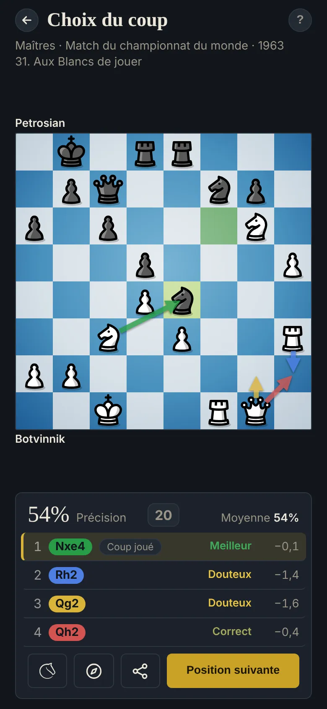

Choix du coup
Comment choisir le meilleur coup
Plusieurs coups ont l'air bien ; un seul est le meilleur. Une fois que les Coups candidats vous ont donné quelques options sérieuses, reste à choisir entre elles, et c'est là que beaucoup de parties se perdent.

Comment choisir
- Vérifiez chaque coup contre la gaffe : regardez les échecs, prises et menaces de l'adversaire après lui. Un coup qui perd du matériel ou expose votre roi passe en dernier, aussi actif qu'il paraisse.
- Comparez les positions obtenues : préférez le coup qui garde ou renforce vos déséquilibres les plus décisifs, comme le demande votre plan.
- Quand deux coups se valent, prenez celui que vous comprenez le mieux : une position claire que vous savez jouer vaut souvent mieux qu'une position confuse.
L'exercice
Classez quatre coups, le meilleur d'abord. L'un d'eux a été joué dans la partie. Dans vos parties, c'est votre coup, et toujours une erreur : une deuxième chance sur une décision manquée.
Trouver le meilleur coup, c'est la moitié du score : la 1re place compte pour 50 %, la 2e pour 30 %, la 3e pour 20 %, chacune comparée au meilleur coup restant.